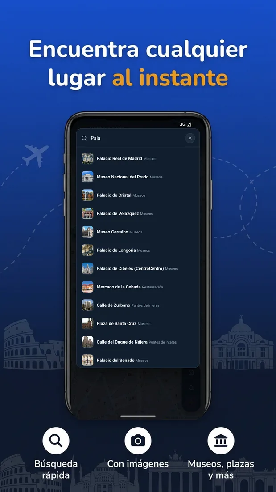
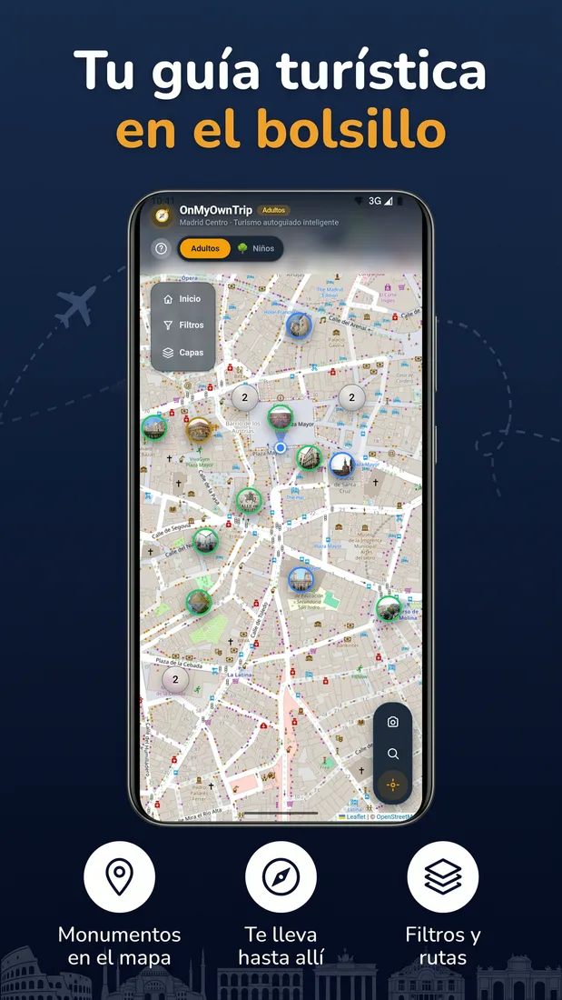
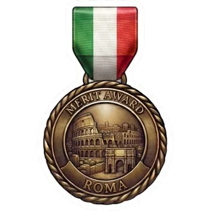
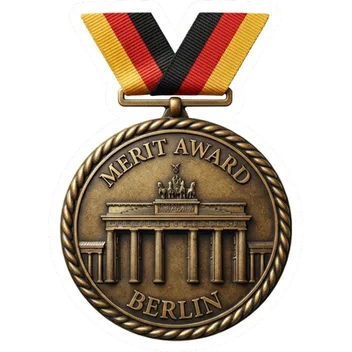
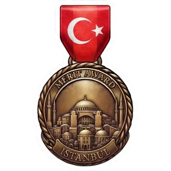
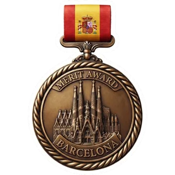
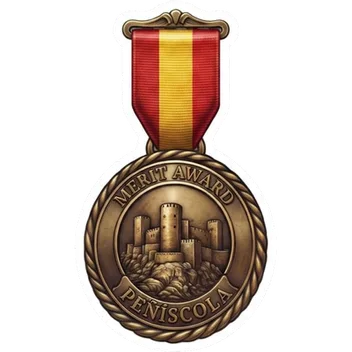

Día Mundial del Turismo 2026
OnMyOwnTrip™
Tu guía turístico con inteligencia artificial, en el bolsillo
Turismo e inteligencia artificial: rediseñando el sector
David G. Henriquez · Fundador
Universidad Anáhuac México, Campus Norte · 29 de septiembre de 2026

Así funciona, en tres pasos

1 · Explora
Los sitios de interés cerca de ti, en el mapa

2 · Escucha
Una audioguía narrada para cada lugar

3 · Pregunta
Tu guía IA responde lo que quieras
Nuestros destinos
13 ciudades en 6 países
Ciudad de México
México

Roma
Italia
Vaticano
Ciudad del Vaticano

Berlín
Alemania

Estambul
Turquía
Madrid
España

Barcelona
España
Toledo
España
Segovia
España
Málaga
España

Alcalá de Henares
España

Peñíscola
España
Buitrago del Lozoya
España
Pruébala hoy, aquí mismo
Escanea el código y comienza a explorar por Ciudad de México en OnMyOwnTrip
Próximamente disponible para Android y iPhone
David G. Henriquez · Fundador
onmyowntriptool@gmail.com
OnMyOwnTrip™